4. Getting Started With F29x MCAL
4.1. Getting access to MCAL
F29H85x MCAL can be obtained in one of the following ways:
4.2. Getting MCAL from ti.com (Package Installer)
4.2.1. Installation Procedure
1.Run the installer executable & Click Next
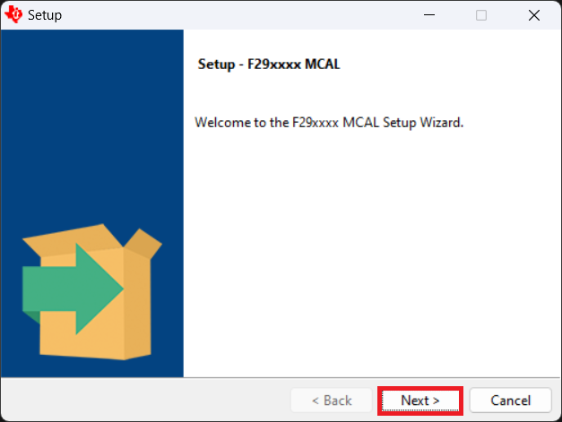
Fig. 4.1 Installation Step1
2.Accept the license agreement & Click Next
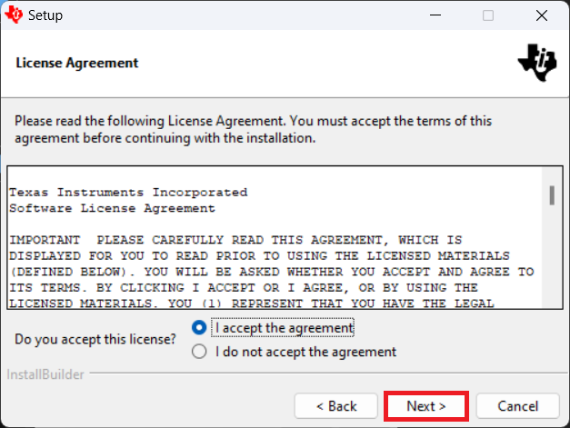
Fig. 4.2 Installation Step2
3.Specify the installation directory & Click Next
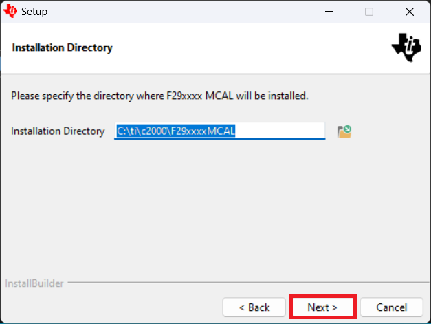
Fig. 4.3 Installation Step3
4.Click Next to begin installation
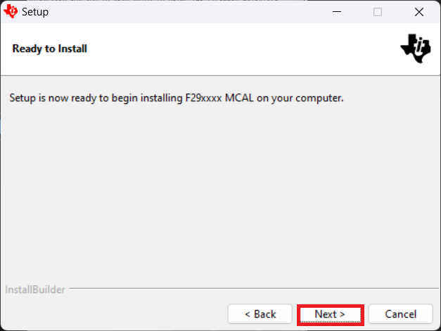
Fig. 4.4 Installation Step4
5.Wait until the Setup complete the installation
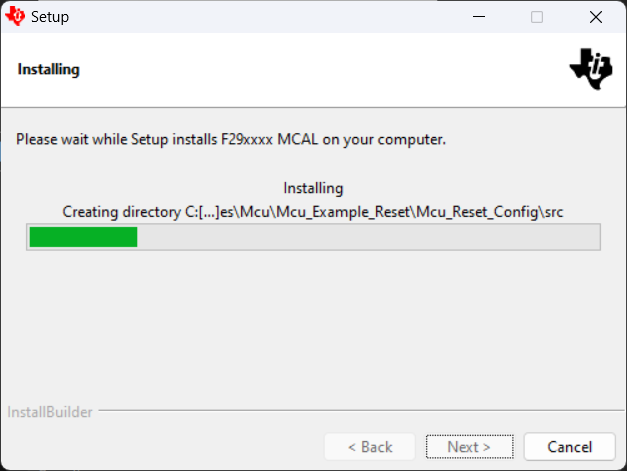
Fig. 4.5 Installation Step5
6.Click Finish to complete the Setup
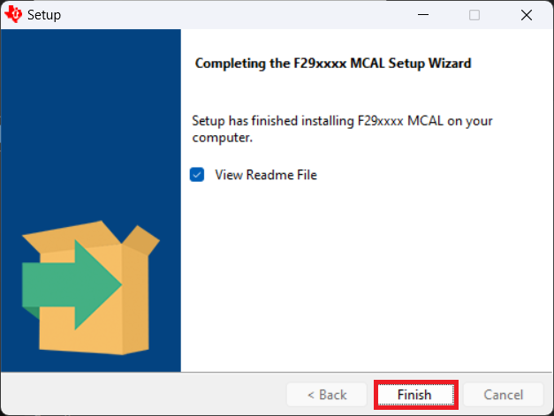
Fig. 4.6 Installation Step6
4.2.2. Un-installation Procedure
1.Check the installation directory (which is selected in Installation Procedure step3) for the package contents F29xxxxMCAL_xx_xx_xx & uninstall executable.
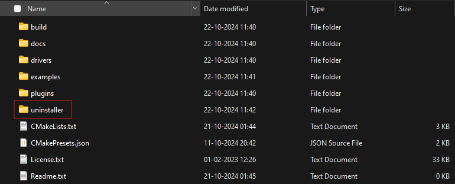
Fig. 4.7 Installation Step7
2.To uninstall the package, Run the uninstall executable & Click Yes
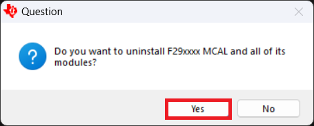
Fig. 4.8 Uninstallation Step1
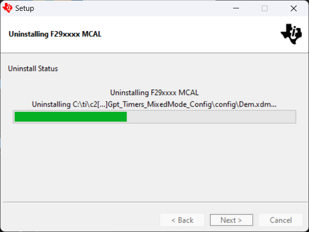
Fig. 4.9 Uninstallation Step2
3.To complete the un-installation process, click OK
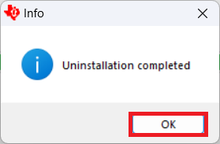
Fig. 4.10 Uninstallation Step3
4.3. Getting MCAL from GitHub
F29H85x MCAL is also available on GitHub at https://github.com/TexasInstruments/f29h85x-mcal
When obtained from GitHub, the package contents are available as-is in the repository — the same folder structure and installer view as the ti.com package installer is present. No installation step is required; simply clone or download the repository to get started.
git clone https://github.com/TexasInstruments/f29h85x-mcal.git
Releases are event-driven and pushed on an as-needed basis — more frequently or at different times than ti.com. Every update is tagged on the main branch and listed under Tags and Releases.
The table below summarizes the types of GitHub updates, how to identify them, and what to expect:
Release Type |
GitHub Identifier |
Maturity & Expectations |
Example |
|---|---|---|---|
EA / STS / LTS release — |
A GitHub Release is created, |
Maturity and support level varies by release type. |
|
Bug fix / Hotfix / Early-Feature release — |
A GitHub Release is created, |
Not fully tested. |
|
Periodic release — |
No GitHub Tag or Release is created. |
Most leading and bleeding-edge state of development. |
F29H85x MCAL periodic GitHub releases |
4.4. F29H85x MCAL overview
F29H85x MCAL consists of three main components, Micro-controller abstraction layer (MCAL Driver code), Bare metal Example applications & EB Tresos studio Plugins.
drivers: The drivers folder includes driver code of MCAL modules. The MCAL drivers implement the Software specification as mentioned in the AUTOSAR 4.3.1 release. It also contains basic software stubs and hardware register information.
examples: The examples folder includes bare metal example applications for the MCAL driver modules that can be compiled and run on hardware. Additionally, the device support and AppUtils folders are included to support Flash-programming and UART console functionality. Where applicable, examples include device-specific configuration sub-folders for supported device variants (F29H85x, F29P32x, F29P58x).
plugins: The plugins folder includes plugins for the MCAL modules that can be loaded, compiled and generate configuration files with EB Tresos Studio software.
4.5. Folder structure
📦F29x_MCAL
┣ 📂build
┣ 📂docs
┣ 📂drivers
┃ ┣ 📂ModuleName
┃ ┃ ┣ 📂include
┃ ┃ ┃ ┣ 📜ModuleName.h : Contains the API declarations of the driver to be used by upper layers.
┃ ┃ ┃ ┣ 📜ModuleName_Priv.h : Contains data structures and Internal function declarations.
┃ ┃ ┣ 📂src
┃ ┃ ┃ ┣ 📜ModuleName.c : Contains the implementation of the API for driver.
┃ ┃ ┃ ┗ 📜ModuleName_Priv.c : Contains Functions that support the API for driver
┃ ┃ ┗ 📜CMakeLists.txt
┣ 📂examples
┃ ┣ 📂ModuleName
┃ ┃ ┣ 📂ModuleName_Example
┃ ┃ ┃ ┣ 📂Common
┃ ┃ ┃ ┃ ┗ 📂tresos
┃ ┃ ┃ ┃ ┃ ┗ 📂config
┃ ┃ ┃ ┃ ┃ ┃ ┗ 📜ModuleName.xdm : Common EB Tresos config files shared across device variants
┃ ┃ ┃ ┣ 📂F29H85x\ (device-specific sub-folder, also F29P32x / F29P58x)
┃ ┃ ┃ ┃ ┣ 📂CCS
┃ ┃ ┃ ┃ ┃ ┗ 📜ModuleName_Example.projectspec : Project template which can be imported into CCS
┃ ┃ ┃ ┃ ┗ 📂ModuleName_Example_Config
┃ ┃ ┃ ┃ ┃ ┣ 📂config
┃ ┃ ┃ ┃ ┃ ┃ ┗ 📜ModuleName.xdm : Device-specific EB Tresos config file in .xdm format
┃ ┃ ┃ ┃ ┃ ┣ 📂output
┃ ┃ ┃ ┃ ┃ ┃ ┣ 📂include
┃ ┃ ┃ ┃ ┃ ┃ ┃ ┗ 📜ModuleName_Cfg.h : Contains the generated pre-compiler configuration header.
┃ ┃ ┃ ┃ ┃ ┃ ┣ 📂src
┃ ┃ ┃ ┃ ┃ ┃ ┃ ┗ 📜ModuleName_Cfg.c or ModuleName_PBcfg.c : Contains the pre/Post build configuration parameters.
┃ ┃ ┃ ┃ ┃ ┃ ┗ 📂swcd
┃ ┃ ┃ ┃ ┃ ┃ ┃ ┗ 📜ModuleName_BSWMD.arxml : Generated Base Software Module Description
┃ ┃ ┃ ┃ ┃ ┗ 📜CMakeLists.txt
┃ ┃ ┃ ┣ 📜ModuleName_Example.c : Example application for driver
┃ ┃ ┃ ┣ 📜ModuleName_Example.h
┃ ┃ ┃ ┗ 📜CMakeLists.txt
┃ ┗ 📜CMakeLists.txt
┣ 📂plugins
┃ ┣ 📂ModuleName_TI_DeviceName
┃ ┃ ┣ 📂config
┃ ┃ ┃ ┣ 📜ModuleName.arxml : Vendor Specific Module Description : ECU Configuration and ECU Parameter definitions for the MCAL module
┃ ┃ ┃ ┗ 📜ModuleName.xdm : ECU Parameter definition for the MCAL module.
┃ ┃ ┣ 📂generate
┃ ┃ ┃ ┣ 📂include
┃ ┃ ┃ ┃ ┗ 📜ModuleName_Cfg.h :Provides template to generate header file
┃ ┃ ┃ ┗ 📂src
┃ ┃ ┃ ┃ ┣ 📜ModuleName_Cfg.c : Provides template to generate Compile Time module configurations
┃ ┃ ┃ ┃ ┗ 📜ModuleName_PBCfg.c : Provides template to generate Post Build module configurations
┃ ┃ ┣ 📂generate_swcd
┃ ┃ ┃ ┗ 📂swcd
┃ ┃ ┃ ┃ ┗ 📜ModuleName_BSWMD.arxml :Base Software Module Description : Contains details such exclusive area, Module Entries, Interrupts, MemMap etc…
┃ ┃ ┣ 📂META-INF
┃ ┃ ┃ ┗ 📜MANIFEST.MF : Licensing and module include information
┃ ┃ ┗ 📜plugin.xml :XML file used to register resources with EB Tresos Studio
┣ 📜CMakeLists.txt
┗ 📜CMakePresets.json
4.6. Getting access to CSP
Will be added in later release.
4.7. Compiler and Linker Settings
Compiler Option |
Description |
|---|---|
-mcpu |
Target processor version : c29.c0 |
-mfpu |
Floating-Point Support Option : Use native 32-bit floating-point hardware operations, but emulate 64-bit floating-point operations in software. |
-g |
Debug information : The c29clang compiler generates DWARF debug information if the -g option is selected. |
-Wall |
Enable most warning categories |
-D |
Predefined Symbol Options : |
-O |
Level of optimization |
-I |
Option to add directories to the include file directory path |
-cl-single-precision-constant |
Option with the c29clang compiler to treat double precision floating-point constants as single precision constants |
-Werror |
Treat detected warnings in the specified category as errors. |
Linker Option |
Description |
|---|---|
–map_file |
Produces a map or listing of the input and output sections, including holes, and places the listing in filename : Project_name.map (as file name) |
–stack_size |
Sets C system stack size to size bytes and defines a global symbol that specifies the stack size. |
–heap_size |
Sets heap size (for the dynamic memory allocation in C) to size bytes and defines a global symbol that specifies the heap size. |
–entry_point |
Defines a global symbol that specifies the primary entry point for the output module |
–xml_link_info |
Generates a well-formed XML file containing detailed information about the result of a link : Project_name._linkInfo.xml (as file name) |
–reread_libs |
Forces rereading of libraries, which resolves back references |
–warn_sections |
Option to cause the linker to display a message when it creates a new output section |
–rom_model |
Tells the linker to auto initialize variables at run time |
–display_error_number |
Displays a diagnostic’s identifiers along with its text |
–diag_wrap |
Wrap diagnostic messages in the output display. This option is enabled by default |
–emit_warnings_as_errors |
Treat all warnings as errors |
–diag_suppress=10068 |
Suppress linker warning for no matching section in code |
–diag_suppress=10325 |
Suppress linker warning for creating BOUND sections |
–diag_suppress=10063 |
Suppress linker warning for entry-point symbol |
-flto |
Enables link-time optimization in the c29clang toolchain. The linker combines all input object files into a merged representation of the application and presents that representation back to the compiler, where inter-module optimizations are performed. |
Refer this link to get more information on C29 Compiler options
Note
Please refer release notes for C29 compiler version details.
4.8. Modules Supported
Driver |
Comments |
Available Cores |
MCAL Supported Cores |
|---|---|---|---|
Can |
Driver for Can module |
CPU 1 / CPU 2 / CPU 3 |
CPU 1 |
Dio |
Driver for Dio module |
CPU 1 / CPU 2 / CPU 3 |
CPU 1 |
Fls |
Driver for Fls module |
CPU 1 / CPU 2 / CPU 3 |
CPU 1 |
Gpt |
Driver for Gpt module |
CPU 1 / CPU 2 / CPU 3 |
CPU 1 |
Lin |
Driver for Lin module |
CPU 1 / CPU 2 / CPU 3 |
CPU 1 |
Mcu |
Driver for Mcu module |
CPU 1 / CPU 2 / CPU 3 |
CPU 1 |
Port |
Driver for Port module |
CPU 1 / CPU 2 / CPU 3 |
CPU 1 |
Spi |
Driver for Spi module |
CPU 1 / CPU 2 / CPU 3 |
CPU 1 |
Wdg |
Driver for Wdg module |
CPU 1 / CPU 2 / CPU 3 |
CPU 1 |
Cdd_Adc |
Driver for Cdd_Adc module |
CPU 1 / CPU 2 / CPU 3 |
CPU 1 |
Cdd_Ecap |
Driver for Cdd_Ecap module |
CPU 1 / CPU 2 / CPU 3 |
CPU 1 |
Cdd_Ipc |
Driver for Cdd_Ipc module |
CPU 1 / CPU 2 / CPU 3 |
CPU 1 |
Cdd_Pwm |
Driver for Cdd_Pwm module |
CPU 1 / CPU 2 / CPU 3 |
CPU 1 |
Cdd_Uart |
Driver for Cdd_Uart module |
CPU 1 / CPU 2 / CPU 3 |
CPU 1 |
Cdd_Sent |
Driver for Cdd_Sent module |
CPU 1 / CPU 2 / CPU 3 |
CPU 1 |
Cdd_Xbar |
Driver for Cdd_Xbar module |
CPU 1 / CPU 2 / CPU 3 |
CPU 1 |
Cdd_I2c |
Driver for Cdd_I2c module |
CPU 1 / CPU 2 / CPU 3 |
CPU 1 |
4.9. Multi-core support
4.9.1. Supported Devices
Device Family |
Devices |
|---|---|
F29x |
F29H85x |
F29x |
F29P58x |
F29x |
F29P32x |
4.9.2. Core Naming Conventions
SoC Family |
Cores Names |
Referred as |
Comments |
|---|---|---|---|
F29H85x |
C29xx_CPU1 |
CPU 1 |
Supported in F29H85x MCAL |
F29H85x |
C29xx_CPU2 |
CPU 2 |
Not supported in F29H85x MCAL |
F29H85x |
C29xx_CPU3 |
CPU 3 |
Not supported in F29H85x MCAL |
Note
MCAL is supported only on CPU1 as some features implemented in MCAL can only be executed from CPU1. When CPU1 and CPU2 are running in lockstep, MCAL implicitly executes on CPU2.
4.10. Dependencies
4.10.1. Hardware Dependencies
4.10.1.1. Emulator
F29x EVMs includes an XDS110 USB emulator which could be used with CCS.
Note
Please refer to ti.com or contact your FAE for documents describing the EVM.
4.10.2. Software Dependencies
4.10.2.1. IDE (CCS)
Code Composer Studio is an integrated development environment (IDE) that supports TI’s Micro-controller and Embedded Processors portfolio.
Note
Please refer release notes for CCS version details.
You can downloaded CCS from ti.com
4.11. Support Modules
4.11.1. Start-up code
📦F29x_MCAL
┣ 📂build
┣ 📂docs
┣ 📂drivers
┣ 📂examples
┃ ┣ 📂AppUtils
┃ ┣ 📂Can
┃ ┣ 📂Cdd_Adc
┃ ┣ 📂Cdd_Dma
┃ ┣ 📂Cdd_Ecap
┃ ┣ 📂Cdd_I2c
┃ ┣ 📂Cdd_Ipc
┃ ┣ 📂Cdd_Pwm
┃ ┣ 📂Cdd_Sent
┃ ┣ 📂Cdd_Uart
┃ ┣ 📂Cdd_Xbar
┃ ┣ 📂DeviceSupport
┃ ┃ ┣ 📂include
┃ ┃ ┣ 📂LinkerCMD
┃ ┃ ┣ 📂src
┃ ┃ ┃ ┣ 📜codestartbranch.asm
┃ ┃ ┃ ┗ 📜DeviceSupport.c : Contains functions that Flash initialize wait states
┃ ┃ ┣ 📂targetconfigs
┃ ┃ ┣ 📜CMakeLists.txt
┃ ┃ ┗ 📜makefile.defs
┃ ┣ 📂Dio
┃ ┣ 📂Empty_Projects
┃ ┣ 📂Fls
┃ ┣ 📂Fls_Fapi
┃ ┣ 📂Gpt
┃ ┣ 📂Lin
┃ ┣ 📂Mcu
┃ ┣ 📂Port
┃ ┣ 📂Rtdma
┃ ┣ 📂Spi
┃ ┗ 📂Wdg
┣ 📂plugins
┣ 📜CMakeLists.txt : Top-level CMake file
┗ 📜CMakePresets.json
codestartbranch.asm: Defines the code start point, it disables watchdog and calls the _c_int00 function. The _c_int00 function is the startup/boot routine responsible for setting up the C environment. Refer compiler user guide to know more details about _c_int00 function.
DeviceSupport.c: Defines DeviceSupport_Init function that initializes the required flash wait states(only for FLASH build configuration).
Attention
Start-up code is for reference only, it should not be used as-is in a typical AUTOSAR applications.
4.11.2. AppUtils
📦F29x_MCAL
┣ 📂build
┣ 📂docs
┣ 📂drivers
┣ 📂examples
┃ ┣ 📂AppUtils
┃ ┃ ┣ 📜AppUtils.c : Contains AppUtils function definitions
┃ ┃ ┣ 📜AppUtils.h
┃ ┃ ┗ 📜CMakeLists.txt
┃ ┣ 📂Can
┃ ┣ 📂Cdd_Adc
┃ ┣ 📂Cdd_Dma
┃ ┣ 📂Cdd_Ecap
┃ ┣ 📂Cdd_I2c
┃ ┣ 📂Cdd_Ipc
┃ ┣ 📂Cdd_Pwm
┃ ┣ 📂Cdd_Sent
┃ ┣ 📂Cdd_Uart
┃ ┣ 📂Cdd_Xbar
┃ ┣ 📂DeviceSupport
┃ ┣ 📂Dio
┃ ┣ 📂Empty_Projects
┃ ┣ 📂Fls
┃ ┣ 📂Fls_Fapi
┃ ┣ 📂Gpt
┃ ┣ 📂Lin
┃ ┣ 📂Mcu
┃ ┣ 📂Port
┃ ┣ 📂Rtdma
┃ ┣ 📂Spi
┃ ┗ 📂Wdg
┣ 📂plugins
┣ 📜CMakeLists.txt : Top-level CMake file
┗ 📜CMakePresets.json
AppUtils provides functions for baremetal MCAL examples.
Below are all the functions that are defined by AppUtils:
AppUtils_Init: This function configures UART by setting the baudrate, clock, parity, data length and stop bits. It enables UART transmission and reception.
AppUtils_Printf: This function internally uses UART to print a message or text on the serial console. This function has a limitation of printing a maximum of 1000 characters for each function call.
AppUtils_DeInit: This function disables UART, which basically disables both transmission & reception of the UART after the it completes the transmission of the data, if there are any pending.
AppUtils_GetChar: This function allows user to enter a character on the serial console.
AppUtils_GetNum: This function allows user to enter a 32-bit number on the serial console.
AppUtils_AssertFunc: This is a macro defined to check if the condition passed to the macro is TRUE at runtime.
Attention
AppUtils source code is for reference only, it should not be used as-is in a typical AUTOSAR applications.
4.11.3. BSW Stubs
📦F29x_MCAL
┣ 📂build
┣ 📂docs
┣ 📂drivers
┃ ┣ 📂BSW_Stubs
┃ ┃ ┣ 📜AUTOSAR_Types
┃ ┃ ┣ 📜CanIf
┃ ┃ ┣ 📜Dem
┃ ┃ ┣ 📜Det
┃ ┃ ┣ 📜EcuM
┃ ┃ ┣ 📜Fee
┃ ┃ ┣ 📜LinIf
┃ ┃ ┣ 📜MemMap
┃ ┃ ┣ 📜OS
┃ ┃ ┣ 📜PduR
┃ ┃ ┗ 📜SchM
┃ ┣ 📂Can
┃ ┣ 📂Cdd_Adc
┃ ┣ 📂Cdd_Dma
┃ ┣ 📂Cdd_Ecap
┃ ┣ 📂Cdd_I2c
┃ ┣ 📂Cdd_Ipc
┃ ┣ 📂Cdd_Pwm
┃ ┣ 📂Cdd_Sent
┃ ┣ 📂Cdd_Uart
┃ ┣ 📂Cdd_Xbar
┃ ┣ 📂Dio
┃ ┣ 📂Fls
┃ ┣ 📂Gpt
┃ ┣ 📂Lin
┃ ┣ 📂Mcu
┃ ┣ 📂Port
┃ ┣ 📂Spi
┃ ┗ 📂Wdg
┣ 📂examples
┣ 📂plugins
┣ 📜CMakeLists.txt : Top-level CMake file
┗ 📜CMakePresets.json
BSW Stubs provides a set of stubs for various Basic Software (BSW) modules, these stubs mimics the behavior of the actual BSW modules. These stubs allow for the development and testing of MCAL drivers without requiring the actual BSW modules to be implemented. The BSW_Stubs folder contains a collection of sub-folders, each representing a specific BSW module. Each of these sub-folders contains stub implementations for the corresponding BSW module.
Attention
BSW Stubs source code is for reference only, it should not be used as-is in a typical AUTOSAR applications.
4.11.4. Device Support
📦F29x_MCAL
┣ 📂build
┣ 📂docs
┣ 📂drivers
┣ 📂examples
┃ ┣ 📂AppUtils
┃ ┣ 📂Can
┃ ┣ 📂Cdd_Adc
┃ ┣ 📂Cdd_Dma
┃ ┣ 📂Cdd_Ecap
┃ ┣ 📂Cdd_I2c
┃ ┣ 📂Cdd_Ipc
┃ ┣ 📂Cdd_Pwm
┃ ┣ 📂Cdd_Sent
┃ ┣ 📂Cdd_Uart
┃ ┣ 📂Cdd_Xbar
┃ ┣ 📂DeviceSupport
┃ ┃ ┣ 📂include
┃ ┃ ┃ ┗ 📜DeviceSupport.h
┃ ┃ ┣ 📂src
┃ ┃ ┃ ┗ 📜DeviceSupport.c : Contains device support function definitions
┃ ┃ ┣ 📂LinkerCMD\ : Contains linker files
┃ ┃ ┗ 📂targetconfigs\ : Contains target configuration files for CCS
┃ ┣ 📂Dio
┃ ┣ 📂Empty_Projects
┃ ┣ 📂Fls
┃ ┣ 📂Fls_Fapi
┃ ┣ 📂Gpt
┃ ┣ 📂Lin
┃ ┣ 📂Mcu
┃ ┣ 📂Port
┃ ┣ 📂Rtdma
┃ ┣ 📂Spi
┃ ┗ 📂Wdg
┣ 📂plugins
┣ 📜CMakeLists.txt : Top-level CMake file
┗ 📜CMakePresets.json
Device Support contains the device specific files such as linker files and startup code that helps in enabling the MCAL examples to run on the target hardware.
Attention
The provided linker files are for the superset variants of respective device family. F29H85x -> F29H859TU8 F29P32x -> F29P329SM2 F29P58x -> F29P58DU5 For using other variants of these device family, the linker file needs to be updated as per the available Flash and RAM
Attention
Device Support source code is for reference only, it should not be used as-is in a typical AUTOSAR applications.
4.11.5. Empty Projects
📦F29x_MCAL
┣ 📂build
┣ 📂docs
┣ 📂drivers
┣ 📂examples
┃ ┣ 📂AppUtils
┃ ┣ 📂Can
┃ ┣ 📂Cdd_Adc
┃ ┣ 📂Cdd_Dma
┃ ┣ 📂Cdd_Ecap
┃ ┣ 📂Cdd_I2c
┃ ┣ 📂Cdd_Ipc
┃ ┣ 📂Cdd_Pwm
┃ ┣ 📂Cdd_Sent
┃ ┣ 📂Cdd_Uart
┃ ┣ 📂Cdd_Xbar
┃ ┣ 📂DeviceSupport
┃ ┣ 📂Dio
┃ ┣ 📂Empty_Projects
┃ ┃ ┣ 📂F29H85x\ (also F29P32x / F29P58x)
┃ ┃ ┃ ┣ 📂CCS
┃ ┃ ┃ ┃ ┗ 📜Empty_Project.projectspec : CCS project template for the empty project
┃ ┃ ┃ ┣ 📂Empty_Project_Config
┃ ┃ ┃ ┃ ┣ 📂config
┃ ┃ ┃ ┃ ┃ ┗ 📜*.xdm : EB Tresos configuration files
┃ ┃ ┃ ┃ ┣ 📂output
┃ ┃ ┃ ┃ ┃ ┣ 📂include
┃ ┃ ┃ ┃ ┃ ┗ 📂src
┃ ┃ ┃ ┃ ┗ 📜CMakeLists.txt
┃ ┃ ┃ ┗ 📜CMakeLists.txt
┃ ┣ 📂Fls
┃ ┗ 📂…
┣ 📂plugins
┣ 📜CMakeLists.txt : Top-level CMake file
┗ 📜CMakePresets.json
Empty Projects are provided as a starting point for customers to build their own AUTOSAR application on top of the F29x MCAL. They include a basic set of MCAL modules with recommended configurations — customers can add more modules or adjust settings as needed for their application.
Each Empty Project contains the following reference infrastructure that can be used directly or adapted:
EB Tresos project: A reference EB Tresos project with basic MCAL module configurations pre-loaded. Customers can extend this project by adding or modifying module configurations as required by their application.
CCS project: A reference CCS project (
.projectspec) that can be imported into Code Composer Studio. It is pre-configured with the necessary build settings, include paths, and source files to compile and run on the target hardware.CMake infrastructure: A reference CMake setup that mirrors the structure used by the MCAL examples. Customers can use this as a template to integrate their application source files and MCAL driver libraries into a CMake-based build system.
Note
Empty Projects are available for each supported device variant (F29H85x, F29P32x, F29P58x). Customers should use the sub-folder corresponding to their target device.
4.12. Build system
4.12.1. CMake (Cross-Platform Make)
CMake is an open-source cross-platform build system generator for software projects that allows developers to specify build parameters in a simple, portable, text file format. This file is then used by CMake to generate project files for native build tools. CMake is not a build system itself; it generates another system’s build files. It can generate native build files for different platforms and compilers, such as Makefiles, Ninja files, Visual Studio solutions, or Xcode projects.
The build of a program or library with CMake is a two-stage process.
Stage 1: CMake input files (.txt and .cmake) are processed to generate build tool files based on the selected build system (make, ninja,Xcode or Visual Studio).
Stage 2: The generated build tool files are used to compile and build source files to generate binaries (executables or libraries).
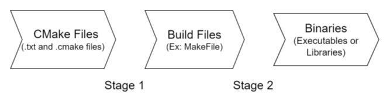
Fig. 4.11 CMake Stage Flow
Note
For more information on CMake, please refer CMake official documentation
4.12.1.1. F29x MCAL CMake Architecture
📦F29x_mcal
┣ 📂build
┃ ┣📂artefacts : CMake generated configuration files
┃ ┣📂assets : Built assets
┃ ┣📂toolchain
┃ ┃ ┣ 📂signing
┃ ┃ ┣ 📜c2000-f29h85x.cmake : Toolchain CMake file
┃ ┃ ┗ 📜ti-cgt-c29-clang.cmake : Toolchain CMake file
┣ 📂drivers
┃ ┣ 📂BSW_Stubs
┃ ┣ 📂Can
┃ ┃ ┣ 📂include
┃ ┃ ┃ ┣ 📜Can.h
┃ ┃ ┃ ┗ 📜Can_Priv.h
┃ ┃ ┣ 📂src
┃ ┃ ┃ ┣ 📜Can.c
┃ ┃ ┃ ┣ 📜Can_Irq.c
┃ ┃ ┃ ┗ 📜Can_Priv.c
┃ ┃ ┗ 📜CMakeLists.txt : CAN driver CMake file
┃ ┣ 📂Cdd_Adc
┃ ┣ 📂Cdd_Dma
┃ ┣ 📂Cdd_Ecap
┃ ┣ 📂Cdd_I2c
┃ ┣ 📂Cdd_Ipc
┃ ┣ 📂Cdd_Pwm
┃ ┣ 📂Cdd_Sent
┃ ┣ 📂Cdd_Uart
┃ ┣ 📂Cdd_Xbar
┃ ┣ 📂Dio
┃ ┣ 📂Fls
┃ ┣ 📂Gpt
┃ ┣ 📂hw_include
┃ ┣ 📂Lin
┃ ┣ 📂Mcal_Lib
┃ ┣ 📂Mcu
┃ ┣ 📂Port
┃ ┣ 📂Spi
┃ ┗ 📂Wdg
┣ 📂examples
┃ ┣ 📂AppUtils
┃ ┣ 📂Can
┃ ┃ ┣ 📂Can_Example_Classic_FD
┃ ┃ ┃ ┣ 📂Common
┃ ┃ ┃ ┃ ┗ 📂tresos
┃ ┃ ┃ ┃ ┃ ┗ 📂config
┃ ┃ ┃ ┃ ┃ ┃ ┗ 📜Can.xdm : Common EB Tresos config shared across device variants
┃ ┃ ┃ ┣ 📂F29H85x\ (also F29P32x / F29P58x)
┃ ┃ ┃ ┃ ┣ 📂CCS
┃ ┃ ┃ ┃ ┃ ┗ 📜Can_Example_Classic_FD.projectspec
┃ ┃ ┃ ┃ ┗ 📂Can_Example_Classic_FD_Config
┃ ┃ ┃ ┃ ┃ ┣ 📂config
┃ ┃ ┃ ┃ ┃ ┃ ┣ 📜Port.xdm
┃ ┃ ┃ ┃ ┃ ┃ ┗ 📜ResourceAllocator.xdm
┃ ┃ ┃ ┃ ┃ ┣ 📂output
┃ ┃ ┃ ┃ ┃ ┃ ┣ 📂include
┃ ┃ ┃ ┃ ┃ ┃ ┃ ┣ 📜Can_Cfg.h
┃ ┃ ┃ ┃ ┃ ┃ ┃ ┣ 📜Dem_Cfg.h
┃ ┃ ┃ ┃ ┃ ┃ ┃ ┣ 📜EcuM_Cfg.h
┃ ┃ ┃ ┃ ┃ ┃ ┃ ┣ 📜Mcu_Cfg.h
┃ ┃ ┃ ┃ ┃ ┃ ┃ ┣ 📜Os_Cfg.h
┃ ┃ ┃ ┃ ┃ ┃ ┃ ┗ 📜Port_Cfg.h
┃ ┃ ┃ ┃ ┃ ┃ ┣ 📂src
┃ ┃ ┃ ┃ ┃ ┃ ┃ ┣ 📜Can_Cfg.c
┃ ┃ ┃ ┃ ┃ ┃ ┃ ┣ 📜Can_PBcfg.c
┃ ┃ ┃ ┃ ┃ ┃ ┃ ┣ 📜Dem_Cfg.c
┃ ┃ ┃ ┃ ┃ ┃ ┃ ┣ 📜EcuM_Cfg.c
┃ ┃ ┃ ┃ ┃ ┃ ┃ ┣ 📜Mcu_PBcfg.c
┃ ┃ ┃ ┃ ┃ ┃ ┃ ┣ 📜Os_Cfg.c
┃ ┃ ┃ ┃ ┃ ┃ ┃ ┗ 📜Port_PBcfg.c
┃ ┃ ┃ ┃ ┃ ┃ ┗ 📂swcd
┃ ┃ ┃ ┃ ┃ ┃ ┃ ┣ 📜Can_BSWMD.arxml
┃ ┃ ┃ ┃ ┃ ┃ ┃ ┣ 📜Mcu_BSWMD.arxml
┃ ┃ ┃ ┃ ┃ ┃ ┃ ┗ 📜Port_BSWMD.arxml
┃ ┃ ┃ ┃ ┃ ┗ 📜CMakeLists.txt : CMake file for Can_Example_Classic_FD_Config folder
┃ ┃ ┃ ┣ 📜Can_Example_Classic_FD.c
┃ ┃ ┃ ┣ 📜Can_Example_Classic_FD.h
┃ ┃ ┃ ┗ 📜CMakeLists.txt : Can_Example_Classic_FD CAN example CMake file
┃ ┃ ┣ 📂Can_Example_Icom
┃ ┃ ┣ 📂Can_Example_Loopback
┃ ┃ ┗ 📂Can_Example_Wakeup
┃ ┣ 📂Cdd_Adc
┃ ┣ 📂Cdd_Dma
┃ ┣ 📂Cdd_Ecap
┃ ┣ 📂Cdd_I2c
┃ ┣ 📂Cdd_Ipc
┃ ┣ 📂Cdd_Pwm
┃ ┣ 📂Cdd_Sent
┃ ┣ 📂Cdd_Uart
┃ ┣ 📂Cdd_Xbar
┃ ┣ 📂DeviceSupport
┃ ┣ 📂Dio
┃ ┣ 📂Empty_Projects
┃ ┣ 📂Fls
┃ ┣ 📂Fls_Fapi
┃ ┣ 📂Gpt
┃ ┣ 📂Lin
┃ ┣ 📂Mcu
┃ ┣ 📂Port
┃ ┣ 📂Rtdma
┃ ┣ 📂Spi
┃ ┣ 📂Wdg
┃ ┗ 📜CMakeLists.txt : Examples CMake file
┣ 📜CMakeLists.txt : Root-Level CMake file
┗ 📜CMakePresets.json : CMake preset json file
F29x MCAL specific CMake files are described below -
CMakePresets.json
This file contains recommended presets configured for F29x MCAL projects, users can continue to use the presets as-is or choose to override them with their project specific requirements by adding a CMakeUserPresets.json file.
It also define all the compiler and linker options as defined in Compiler and Linker Settings
The presets file defines support for different generators -
mingw-c2000-f29h85x: Preset for MinGW Makefiles generator - works on Windows based system
unix-c2000-f29h85x: Preset for Unix Makefiles generator - works on Linux based system
ninja-c2000-f29h85x: Preset for Ninja generator - works on both Windows and Linux based system.
Note
The options set in CMakePresets.json file can be overridden using CMakeUserPresets.json file. For more information about CMake Presets refer cmake-presets.
Toolchain
Since we need to perform cross-compilation toolchain files are defined to ease the compiler integration in CMake.
c2000-f29h85x.cmake : This file defines the required CPU Flags and is device / core specific.
ti-cgt-c29-clang.cmake : This file defines all necessary information required to use C29Clang compiler including Compiler path handling, standard library inclusion etc.
CMakelists.txt file at Root-level
This file defines the minimum required CMake version for the project.
It defines the BUILD_CONFIGURATION which controls whether the executable runs from FLASH or RAM on the target.
It also provides Signing function which is needed to sign the generated executable when FLASH mode is selected.
CMakelists.txt file at MCAL Driver level
This file is used to create interface library for each MCAL / CDD for easy inclusion in Application.
The library is defined using the add_library.
All the source files in the driver are added using target_sources.
All header file include paths are added to the library using target_include_directories.
Any application wanting to use the MCAL / CDD can do so by adding this file into their CMakelists.txt.
CMakelists.txt file at config level
This file is used to create an interface library for the generated config file from EB Tresos.
It is recommended to use this file for easier management of files generated from the Configurator.
Any application wanting to use the MCAL / CDD needs to also include this file along with the driver level CMakelists.txt to compile MCAL / CDD correctly.
Reference for this file can be found in all of the provided MCAL / CDD examples.
CMakelists.txt file at Example level
This file defines the actual executable target to be created by using add_executable.
All required interface libraries are add using add_subdirectory.
To protect against re-inclusion of a library / target an IF check is added.
Additional Linker options are defined using add_link_options command.
Required interface libraries are linked using target_link_libraries command.
add_custom_command is used to move the generated files to a different location.
4.12.1.2. CMake options
4.12.1.2.1. F29x MCAL Specific options during CMake configure (Stage 1)
To configure CMake following command can be executed in terminal -
cmake -S {source_dir_path} --preset {preset_name} -DCMAKE_BUILD_TYPE = {build_type} -DBUILD_CONFIGURATION = {build_configuration} -DTCP={path-to-the-compiler}
For example,
cmake -S . --preset mingw-c2000-f29h85x -DCMAKE_BUILD_TYPE=Debug -DBUILD_CONFIGURATION=RAM -DTCP="C:\ti\ti-cgt-c29_1.0.0LTS"
Configure Option |
Description |
|---|---|
TCP |
Compiler path can be specified with this parameter, if the compiler is not already on the system’s PATH environment variable. |
CMAKE_BUILD_TYPE |
Defines the build type for the project. Possible options are - |
BUILD_CONFIGURATION |
Controls which memory area application executes from. Possible options are - |
4.12.1.2.2. F29x MCAL Specific options during CMake build (Stage 2)
To build following command can be executed in terminal -
cmake --build {path-to-the-CMake-generated-files} -t {target}
For example,
cmake --build build/artefacts -t Can_Example_Classic_FD
Configure Option |
Description |
|---|---|
path-to-the-CMake-generated-files |
Path to CMake generated files from stage 1. This is located at build/artefacts folder. |
target |
Name of the target to be built (default : all) |
Note
–clean-first option can be appended to the target build command to clean the build before re-building a target.
4.12.1.3. How to link F29x MCAL / CDD CMake to your application
Any MCAL example CMake file can be used as reference.
Create a main CMake file to handle CMake build for your application.
Include required MCAL / CDD drivers using add_subdirectory.
Add generated code from MCAL Configurator by creating a separate CMakelists.txt for the generated files and including this file in your application CMakelists.txt using add_subdirectory.
Add required compiler and linker options.
Link all the added interface libraries in Step 2 and 3 by using target_link_libraries.
Note
For more information on CMake support by the C29Clang compiler you can refer compiler documentation
4.12.2. Code Composer Studio (CCS)
4.12.2.1. Importing projects into CCS
📦F29x_MCAL
┣ 📂build
┣ 📂docs
┣ 📂drivers
┣ 📂examples
┃ ┣ 📂AppUtils
┃ ┣ 📂Can
┃ ┃ ┣ 📂Can_Example_Classic_FD
┃ ┃ ┃ ┣ 📂Common
┃ ┃ ┃ ┣ 📂F29H85x\ (also F29P32x / F29P58x)
┃ ┃ ┃ ┃ ┣ 📂CCS
┃ ┃ ┃ ┃ ┃ ┗ 📜Can_Example_Classic_FD.projectspec : Project template which can be imported into CCS
┃ ┃ ┃ ┃ ┗ 📂Can_Example_Classic_FD_Config
┃ ┃ ┃ ┣ 📜Can_Example_Classic_FD.c
┃ ┃ ┃ ┣ 📜Can_Example_Classic_FD.h
┃ ┃ ┃ ┗ 📜CMakeLists.txt
┃ ┃ ┣ 📂Can_Example_Icom
┃ ┃ ┣ 📂Can_Example_Loopback
┃ ┃ ┗ 📂Can_Example_Wakeup
┃ ┣ 📂Cdd_Adc
┃ ┣ 📂Cdd_Dma
┃ ┣ 📂Cdd_Ecap
┃ ┣ 📂Cdd_I2c
┃ ┣ 📂Cdd_Ipc
┃ ┣ 📂Cdd_Pwm
┃ ┣ 📂Cdd_Sent
┃ ┣ 📂Cdd_Uart
┃ ┣ 📂Cdd_Xbar
┃ ┣ 📂DeviceSupport
┃ ┣ 📂Dio
┃ ┣ 📂Empty_Projects
┃ ┣ 📂Fls
┃ ┣ 📂Fls_Fapi
┃ ┣ 📂Gpt
┃ ┣ 📂Lin
┃ ┣ 📂Mcu
┃ ┣ 📂Port
┃ ┣ 📂Rtdma
┃ ┣ 📂Spi
┃ ┣ 📂Wdg
┃ ┗ 📜CMakeLists.txt
┣ 📜CMakeLists.txt
┗ 📜CMakePresets.json
Every F29x MCAL example comes with a projectspec file which can be imported in CCS.
Open CCS and select Import Project -
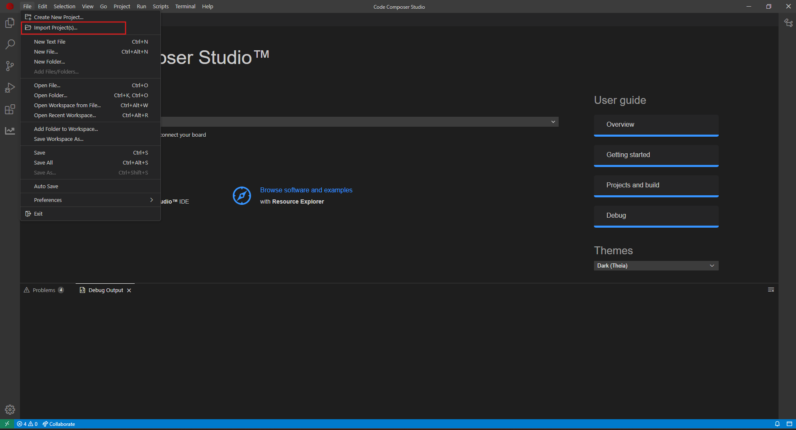
Fig. 4.12 CCS Import Step 1
Browse to the folder containing Projectspec file and select the desired CCS Project to be imported.
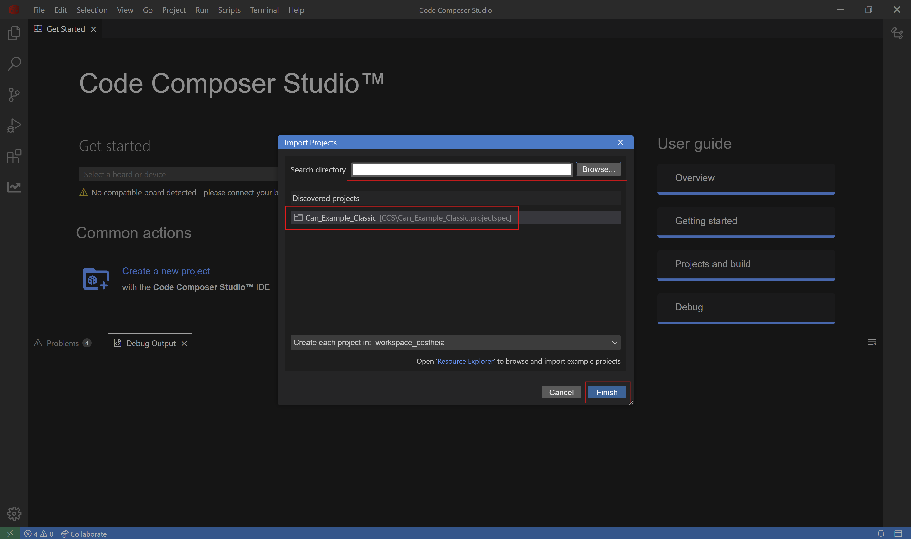
Fig. 4.13 CCS Import Step 2
Once project is imported you can continue to build and debug the project.
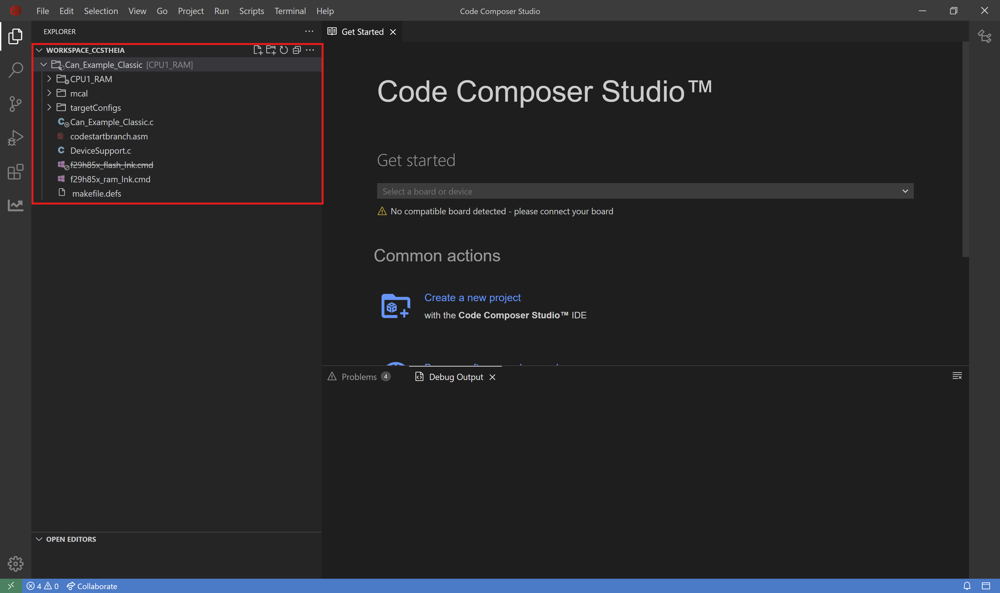
Fig. 4.14 CCS Project Imported
4.12.2.2. Loading generated executable file using CCS
Import any example project to CCS, right click on the ccxml file and ‘Start project-less Debug’.
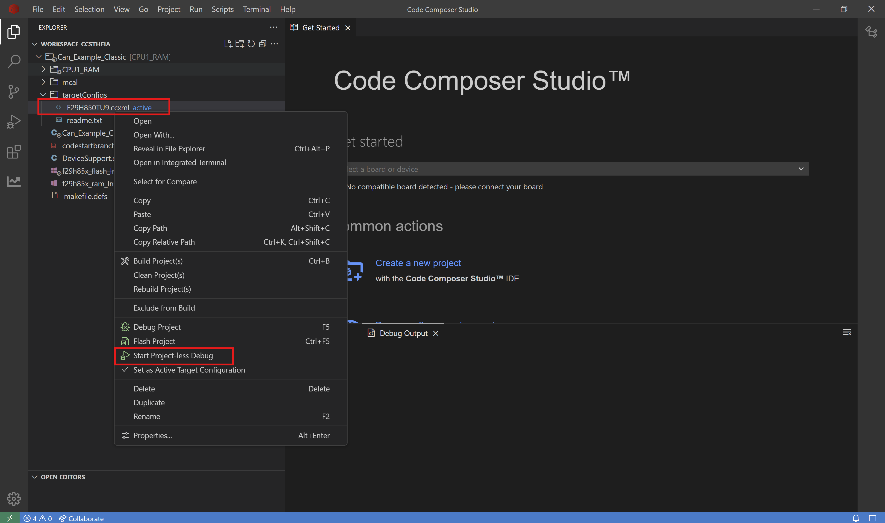
Fig. 4.15 CCS Loading Executable Step1
Right click on the C29xx_CPU1 THREAD and ‘Connect Target’.
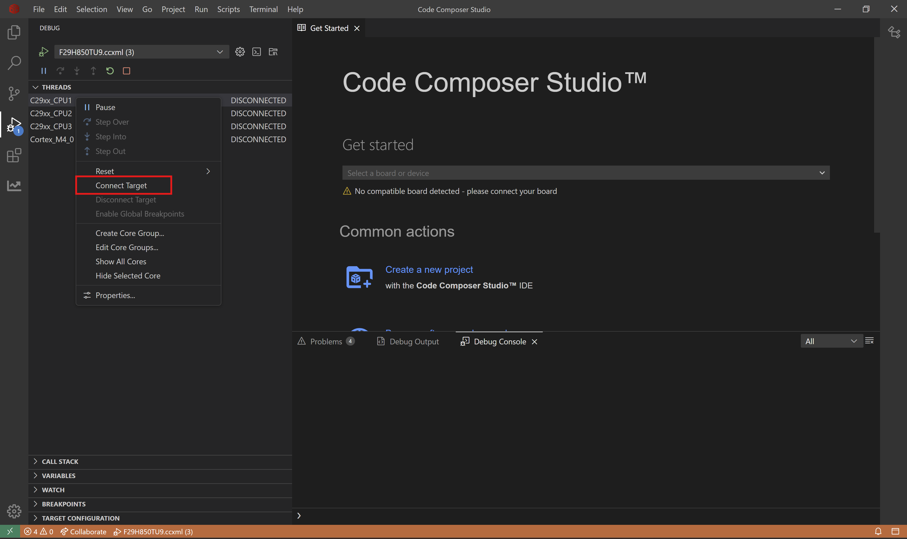
Fig. 4.16 CCS Loading Executable Step2
Go to Run - Load - Load Program.
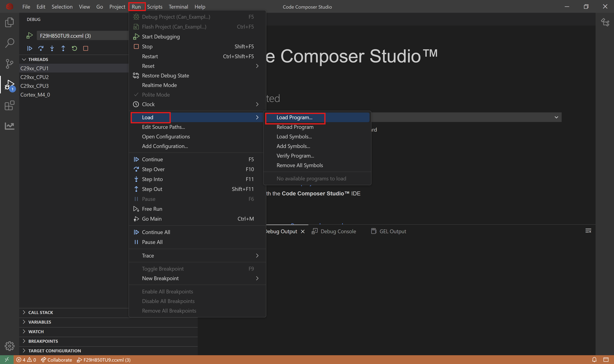
Fig. 4.17 CCS Loading Executable Step3
Browse to the folder containing the generated executable, select the desired executable to be loaded and click on OK.
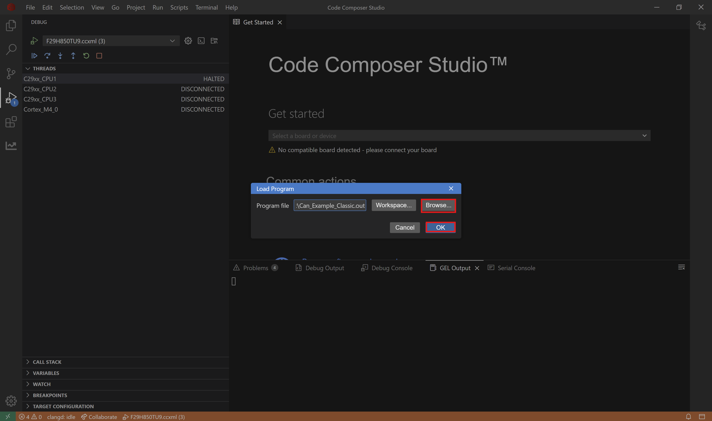
Fig. 4.18 CCS Loading Executable Step4
Once the executable is loaded you can continue to run and debug the project.
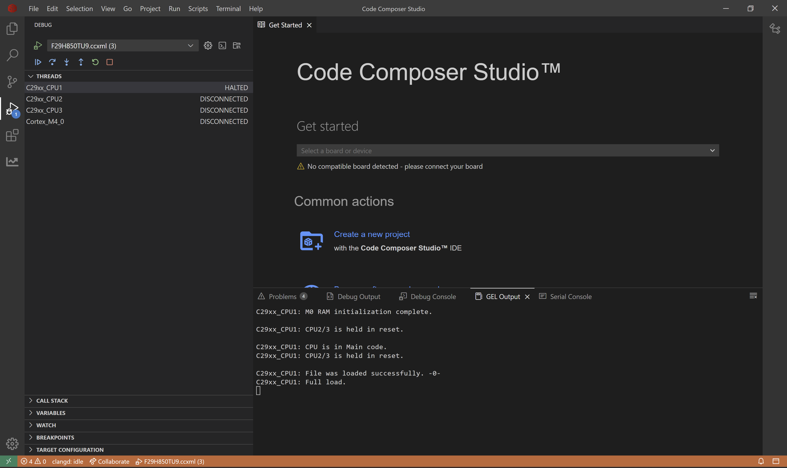
Fig. 4.19 CCS Executable Loaded
Note
For more information on projectspec and it’s use in CCS refer documentation.
4.12.2.3. Building and Debugging projects in CCS
Note
For information on how to build and debug any project in CCS refer documentation.
4.13. Information on the F29x device family
4.13.1. F29x CPU Architecture
The F29x CPU is a VLIW (Very Long Instruction Word) architecture with a fully protected pipeline. The CPU supports multiple instruction sizes (16/32/48 bits). The CPU also supports variable instruction packet size, with each packet able to contain up to eight instructions that execute in parallel.
Following are the list of F29H85x CPU major features:
Ease of use
Improved parallelism
Improved bus throughput
Code efficiency
ASIL-D safety capability with code isolation in hardware
Multi-zone security in hardware
Enhanced debug and trace capabilities
You can downloaded TRM from ti.com
4.13.2. F29x CPU Emulation API
The F29H85x, F29P58x, and F29P32x are members of the C2000™ real-time microcontroller family The device information is available in the datasheet and can be downloaded at ti.com
Emulation API supports to emulate multiple part number devices on a single device, one at a time.This helps to test softwares for multiple devices on a single device. Emulation API restricts the usage of features/resources according to the device being emulated.
Note
F29H85x is the super set device.MCAL will use F29H85x and it needs to be selected as Target / Derivate during EB Tresos project creation irrespective of the subset device being used (device being emulated).
4.13.2.1. Emulation API usage
The Emulation API needs to invoked before ECUM initialization. To emulate the device F29P329SM2, below command needs to be invoked
DeviceSupport_EmulateDevice(DEVICE_F29P329SM2);
To emulate other devices the following macros can be passed as argument to function DeviceSupport_EmulateDevice(partNumber)
Part Number |
|---|
DEVICE_F29H859TU8 |
DEVICE_F29H859TM8 |
DEVICE_F29H859DM6 |
DEVICE_F29H859DU6 |
DEVICE_F29P589DM5 |
DEVICE_F29P589DU5 |
DEVICE_F29P329SM2 |
Once emulation API is invoked, if any feature/resource is accessed which is not avaialble to the emulated device, then an exception will occur.
When exception occurs the program enters wait mode.The wait mode puts the CPU in a loop in the boot ROM code and does not branch to the user application code. The program counter goes to wait point address and stays in wait boot mode.
Program Counter Address Range |
Description |
|---|---|
0x1535C |
In Wait Boot mode |
0x14EB0 |
In Wait Boot mode |
The device can be recovered by erasing the flash memory and then flashing a correct software.
Below is an example of the error when an exception occured
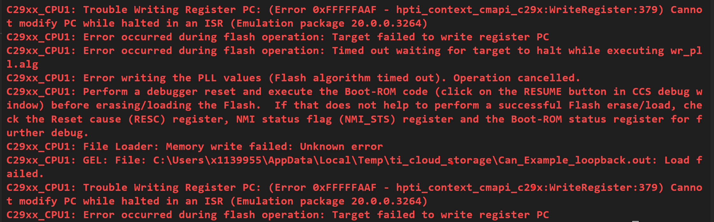
Fig. 4.20 Debug message on exception
4.14. Boot Modes
Will be added in later release.
4.15. Loading example configs to EB tresos
Launch the EB Tresos tool. On the Welcome Screen, click on the Start Icon. Refer Getting Started with EB Tresos - Create an EB project for details.
Click on File -> Import to import an existing project into the workspace.
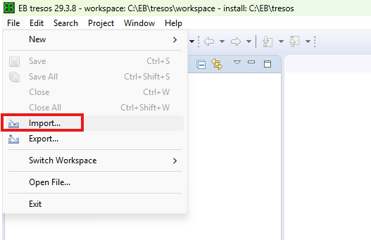
Fig. 4.21 EB Tresos File -> Import
Select Existing Projects into Workspace and then click on Next.
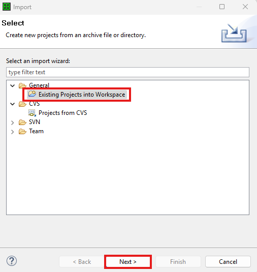
Fig. 4.22 EB Tresos - Select Existing Projects into Workspace
Browse to
{MCAL_INSTALL_PATH}\examples, select the example to load, and click on Finish.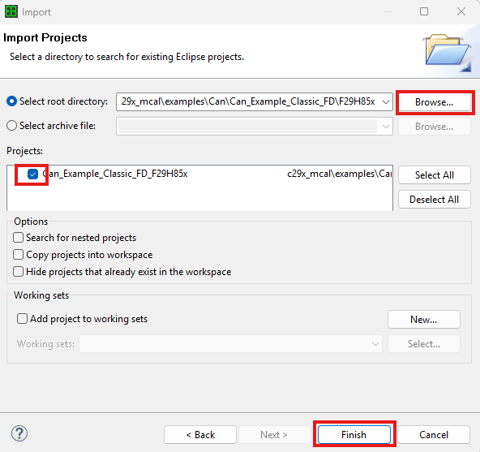
Fig. 4.23 EB Tresos - Browse and Select Example
The selected examples will be loaded in the workspace as shown below.
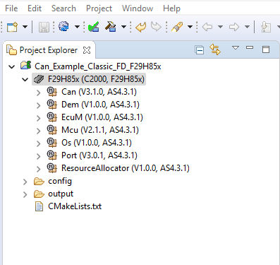
Fig. 4.24 EB Tresos - Examples Loaded in Workspace
The examples come with a MultiTask wizard setup that performs AutoCalc, Generate, and Generate BSWMD steps. Click on Run to execute all steps with a single click.
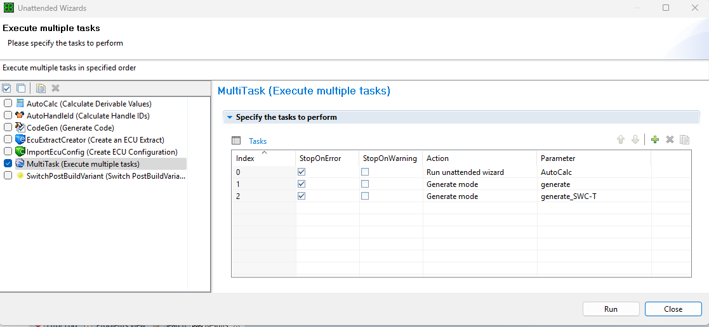
Fig. 4.25 EB Tresos - MultiTask Wizard
Note
The MultiTask wizard can also be executed by clicking the shortcut button shown below.
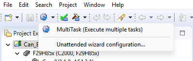
Fig. 4.26 EB Tresos - MultiTask Wizard Shortcut Button
4.16. AI Coding Assistant Support
Beta
F29x MCAL includes support for AI-assisted development workflows to help developers get started more quickly and efficiently.
4.16.1. CCS AI Coding Assistant
An AGENTS.md file is included in the package to enable AI coding agent workflows within Code Composer Studio (CCS). AI coding agents can use this file to automatically generate functional F29x MCAL example projects with minimal manual setup.
Key capabilities:
AI coding agents can automatically create working F29x MCAL example projects
Compatible with CCS v20.05.00 and later
CCS provides integrated MCP (Model Context Protocol) services for build and debug operations, enabling AI agents to detect and resolve issues automatically during development
For more information on AI coding assistant support in CCS, refer to the CCS User Guide — AI Coding Assistants.
Note
As with any AI-based tooling, results may vary. The AGENTS.md file will be updated iteratively based on user feedback. Always review AI-generated code before integrating it into your application.
4.16.2. LLM Context Files
The following files are provided to give AI language models structured context about the F29x MCAL project:
llms.txt — A concise summary of the project structure and APIs, following the llms.txt standard
llms-full.txt — A comprehensive version with full project context for AI tools
These files help AI tools better understand the F29x MCAL project structure and APIs, enabling more accurate code suggestions and project generation.